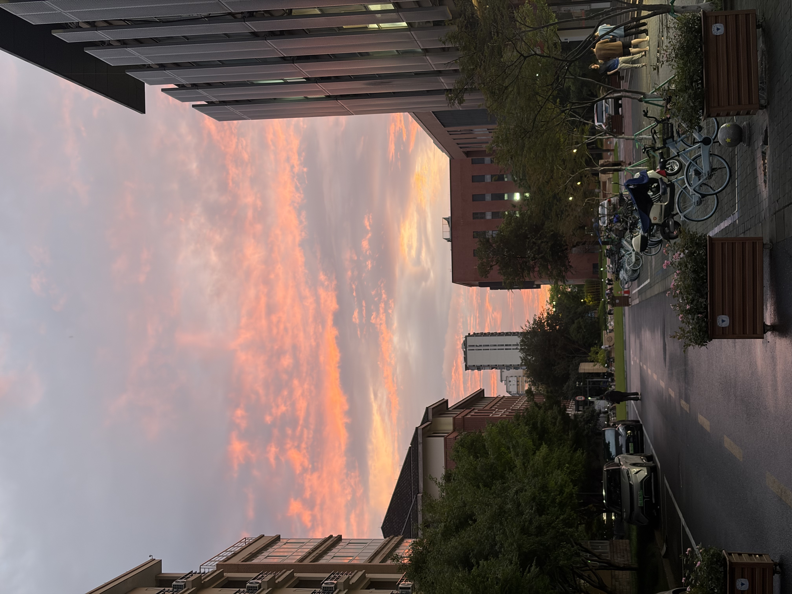

The sunset on the last day of the semester painted the sky above HZCU in layers of amber and violet. Everyone on campus seemed to stop for a moment — phones out, heads tilted, just watching. No research, no deadlines. Just a warm July evening and a sky that looked like it knew it was saying goodbye to something.